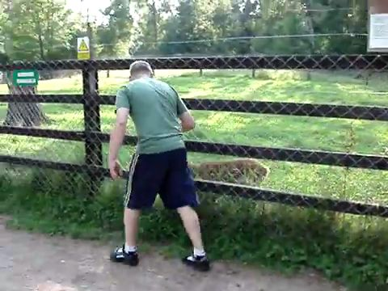
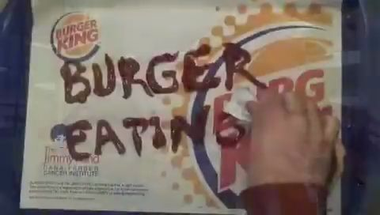
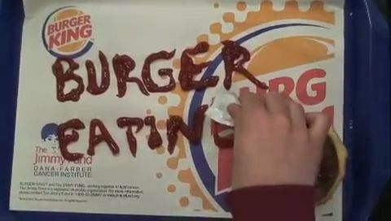
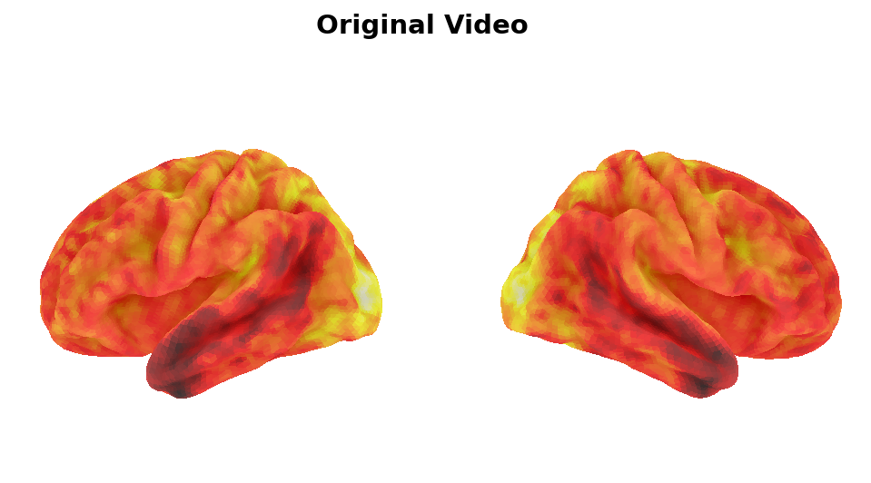
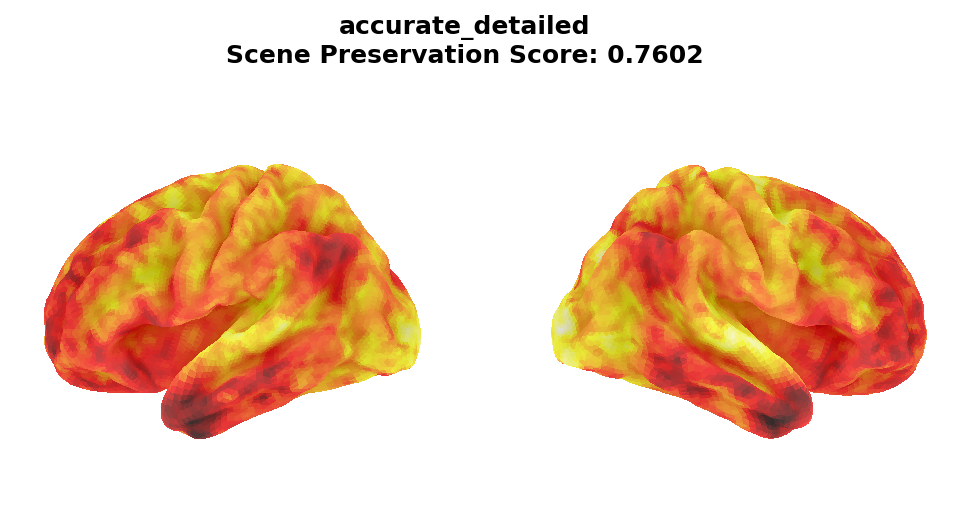
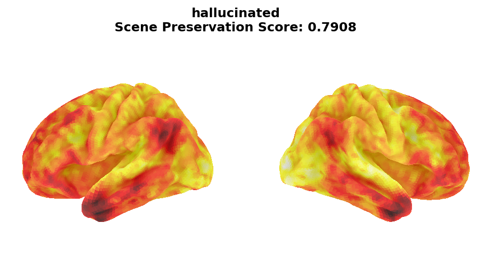
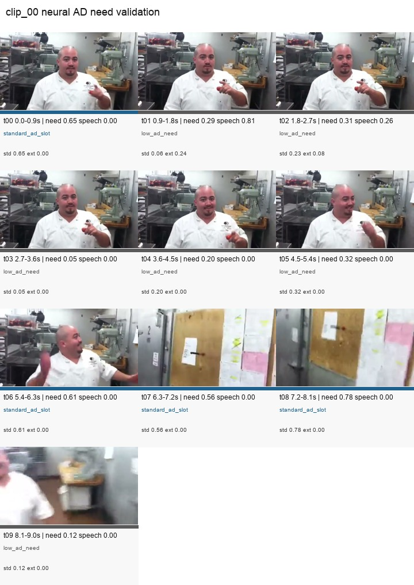
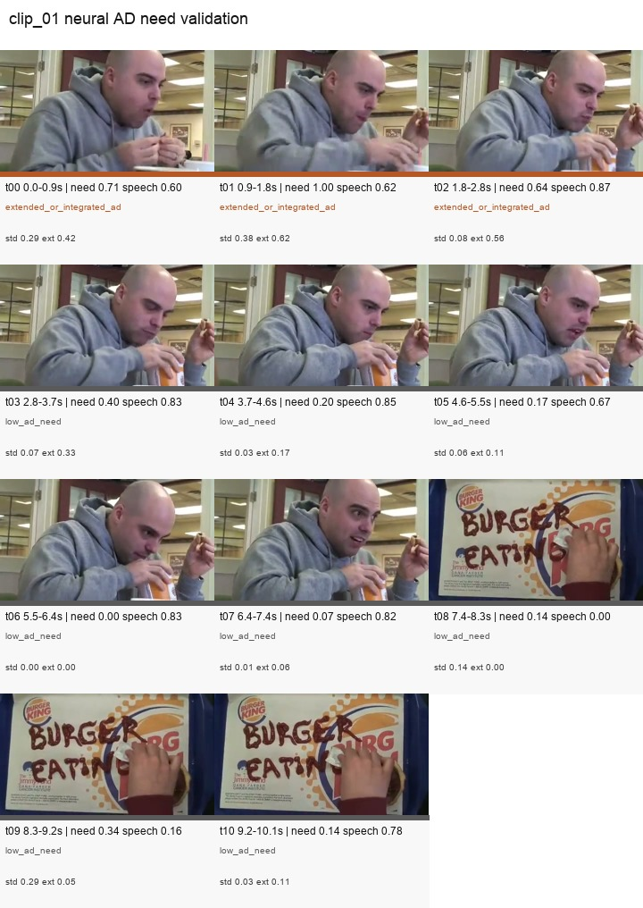

SceneTwin: reference-free audit of audio description quality
A scalable pipeline for checking whether audio descriptions are visually grounded and answer the questions a blind or low-vision viewer would need answered.
Reference-Free AD Evaluation Works
SceneTwin ranked four candidate descriptions per video without using a human-written reference answer.
Main score: equal-weight fusion of clip-normalized frame-grounded ADQA and CLIP mean. Bootstrap CI for ensemble ρ: [0.904, 0.957].
What Gets Ranked
Each video has a controlled quality ladder: unrelated text, short caption, longer caption, and professional audio description.
| Tier | Candidate | Expected |
|---|---|---|
| tier0 | Cross-category control | worst |
| tier1 | Short VATEX caption | low |
| tier2 | Long VATEX caption | mid |
| tier3 | Professional VideoA11y AD | best |

How SceneTwin Scores AD
The pipeline checks both grounding and comprehension. CLIP catches wrong-scene text; ADQA catches vague text that looks plausible but does not answer visual questions.
Example visual evidence


Stage 4 ADQA generated 90 frame-grounded questions and graded 360 anonymized candidate-question pairs.
Bias Checks
Good ADs are often longer, so verbosity has to be ruled out as the easy explanation.
| Check | Result |
|---|---|
| Length-only baseline | 0/18 fully ordered clips |
| Within-clip length residualization | ρ remains 0.874 |
| Equal all-judge ADQA mean | ρ 0.933, no cherry-picked judge subset |
SceneTwin Visuals: Brain-Like Prediction Space
The brain-model branch gives the poster a useful visual story, but it should be framed carefully: TRIBE is strongest as triage and timing, not direct text correctness scoring.





Cross-Model Robustness
Different questioner/grader model pairs preserve positive tier signal. Multi-judge averaging stabilizes the final score.
| Questioner → Grader | ρ | Role |
|---|---|---|
| Claude → Claude | 0.803 | baseline |
| Claude → GPT-4o | 0.730 | swap |
| GPT-4o → Claude | 0.789 | swap |
| All-four judge mean | 0.933 | fair primary check |
Complementary signal
Mean per-clip CLIP-to-ADQA Spearman was 0.761. They overlap enough to be coherent, but not enough to be redundant.
TRIBE as a Risk Forecast
TRIBE is most useful before scoring: it flags clips where automatic evaluation is likely to be fragile.
tier2/tier1 inversion risk
professional AD barely leads
clean but high standard-slot pressure
clean lower-risk clip
Caveat: this is a strong pilot, not finished proof. There are only two known all-judge full-order failures.
What We Tried That Failed
These branches matter because they narrow the honest claim. The survivor is reference-free scoring plus TRIBE triage.
Takeaway: SceneTwin makes audio-description QA scalable by separating the problem into grounded visual evidence, listener-style comprehension, and upstream risk triage. The strongest claim is practical: good AD can be audited without a reference description.